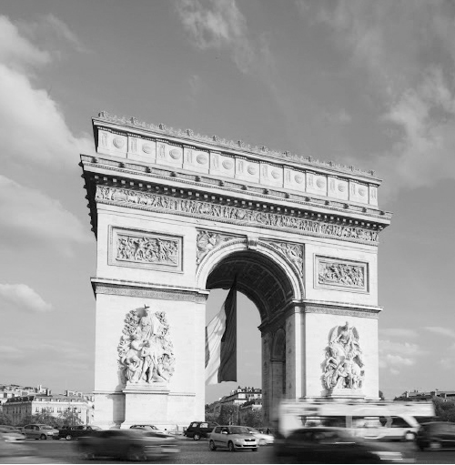

Sân bay Charles de Gaulles. Sáu giờ sáng, một ngày cuối tháng Ba năm 1999. Gã ngố, là tôi, ra khỏi cửa Hải quan, ngạc nhiên vì không có bất kỳ ai chặn lại, thậm chí không một ai hỏi han hay để mắt tới. Vào Pháp dễ đến thế sao?
Nếu như tôi có hình thức đáng tin hay hành lý gọn nhẹ thì có thể hiểu được. Đằng này… Chắc chẳng ai đặt chân đến Pháp với bộ dạng thê thảm như tôi. Tám mươi cân hành lý được nhồi nhét trong hai cái vali to, thêm hai thùng carton, một túi kéo, một túi đeo trên người. Nếu phải mang từng ấy thứ, tôi cũng chẳng ngại. Đáng ngại ở chỗ tôi mang gấp đôi trọng lượng cho phép. May sao chị tôi lại quen một anh làm ở sân bay. Anh bảo tôi mở vali, lấy đồ cho vào một đống túi giấy VNAirlines mà anh vừa quờ được ở đâu đó. Nhét đầy chục túi, anh cầm vào trong, đợi tôi ở cửa máy bay và giao lại.
Lúc lên máy bay, tôi ngượng chín người vì ai cũng nhìn mình với đống túi giấy lỉnh kỉnh. Lúc xuống máy bay ở đầu Paris còn thê thảm hơn. Sau khi lấy vali, tôi muốn mở chúng ra để nhét lại đồ vào nhưng không sao nhét được. Cũng dễ hiểu, vì đó là “công trình” thu xếp bao nhiêu ngày của mẹ tôi, bà lèn, bà cuốn, bà nhét giỏi đến mức lấy ra vô số đồ rồi mà vali vẫn đầy nguyên. Chỉ có cách đổ hết ra xếp lại từ đầu. Mà tôi thì không đủ dũng cảm làm việc ấy. Bởi trong vali không chỉ đựng quần áo, sách vở mà còn là muối vừng, ruốc, ớt bột, mì chính, hạt tiêu, nồi cơm điện… Phong phú chẳng khác nào một cửa hàng tạp hóa! Hành trang của gã sinh viên nghèo đi du học là thế. Có lẽ cũng vì vậy mà Hải quan Pháp thậm chí chẳng ngó ngàng đến tôi, chẳng kẻ nào khùng điên đến mức mang hàng cấm mà gây sự chú ý một cách tự nhiên như thế.
Tôi bặm môi, xốc lại cái túi đeo trên người, bỗng nhiên kẹo từ trong túi rơi ra lả tả. Trước lúc lên máy bay, mẹ tôi nhét đầy kẹo vào túi. “Con đang hút thuốc lá nhiều thế mà bỏ, thể nào cũng buồn mồm con ạ, ăn kẹo cho đỡ thèm.”
Mà thèm thật, sau mười mấy tiếng trên máy bay, tôi thèm một điếu thuốc đến phát cuồng. Tháng Ba, Paris vẫn còn lạnh. Lạnh thế này mà hút thuốc thì đã phải biết. Thôi, ăn tạm cái kẹo. Đắng ngắt.
Không có ai ra đón. Biết trước là như thế mà tôi vẫn cảm thấy hụt hẫng và lạc lõng giữa sân bay quá rộng lớn và đông đúc này. Cậu bạn cùng khóa cũng được học bổng lần này đã đi trước tôi một tuần. Cậu đang ở nhà một người quen của tôi, đợi tôi sang rồi cả hai đi tìm nhà thuê chung. Cậu không đón tôi, chỉ viết mail: “Đi về trung tâm dễ lắm, không cần tao đón. Đến sân bay chỉ cần mua cái thẻ điện thoại gọi cho tao, tao chỉ đường cho về.”
Vật vờ ở sân bay một lúc không tìm thấy chỗ nào bán thẻ điện thoại, tôi nghĩ thầm: “Khỏi cần, gọi điện thì nó cũng chỉ chỉ đường đi tàu điện ngầm về trung tâm thôi. Mình sẽ tự hỏi”. Bắt gặp một người nói tiếng Anh, tôi chìa địa chỉ cần đến ra hỏi, ông ta nghĩ một lát, nhìn đống hành lý của tôi và bảo: “Để đến chỗ này, nếu đi tàu điện ngầm phải đổi mấy lần, lên xuống nhiều cầu thang, riêng chỉ đi bộ từ đây ra đến bến tàu cũng đã cả cây số rồi. Tôi khuyên anh đi xe bus. Có xe đỗ ngay trước cửa kia”. Vậy là tôi lên xe bus, tài xế bảo: “Xe về trung tâm Paris”. Tôi tặc lưỡi “Thế là được, về đó tính sau. Mua thẻ gọi bạn ra đón.”
Xe bus đi khá lâu, chừng cả tiếng đồng hồ rồi thả tôi xuống một vòng xoay giao thông rộng lớn. Tôi ngỡ ngàng nhận ra: Khải Hoàn Môn.
Trước lúc đến Paris, hình như tôi đã nhìn thấy ảnh Khải Hoàn Môn trong một cuốn sách nào đó. Chẳng hiểu sao tôi cứ nghĩ nó giống như cái cổng chùa hay cổng làng ở Việt Nam, to hơn một chút là cùng. Đến nơi rồi, thấy nó sừng sững đứng đó tôi mới giật mình: thật kỳ vĩ! Người xưa không có máy tính để làm mô phỏng, để tính toán chính xác khối lượng, kỹ thuật và thời gian mà lại nghĩ và làm được một công trình thế này, quả thật đáng kinh ngạc vô cùng!
Không biết với mọi người, ấn tượng đầu tiên khi nhìn thấy Khải Hoàn Môn là gì, chỉ biết rằng lúc đó, tôi thậm chí không đủ sức ngước nhìn quá lâu. Mệt đói, kiệt sức với gánh nặng của gần 100 cân hành lý và gánh nặng tinh thần: tôi đến Paris du học với 500 đô-la trong túi. Học bổng của tôi chỉ được miễn học phí, còn ăn ở sinh hoạt trông vào vẻn vẹn số tiền ấy. Cái vali to kéo được gần 100 mét thì gãy bánh. Vậy là từ lúc ấy tôi thành một phu khuân vác, trời lạnh mà mồ hôi đầm đìa. Lúc lên máy bay tôi đã cố mặc thật nhiều quần áo để nhẹ bớt hành lý, bây giờ làm sao cởi ra?
Khải Hoàn Môn khi ấy với tôi là điểm đến đau khổ hơn là Cổng vòm chiến thắng ngày về.
Nhưng tôi vẫn nhớ rất rõ rằng khi ấy, tôi, mồ hôi nhễ nhại với đống hành lý lỉnh kỉnh đã ngang qua cổng Khải Hoàn Môn và tự nói với lòng mình: “Mẹ ơi, đừng lo, rồi con sẽ chiến thắng trở về”. Tôi có những ước mơ và một niềm tin.

Khải Hoàn Môn. (Ảnh: Nguyễn Hồng Long).
Rồi tôi đi tìm chỗ bán thẻ điện thoại để gọi cho cậu bạn. Nhưng đành chịu: hôm ấy là Chủ nhật, trời hãy còn sớm nên không mấy ai ngoài đường, nhiều cửa hàng còn chưa mở cửa. Thêm nữa, sau này tôi mới biết, ở Paris muốn mua thẻ điện thoại thì phải vào hàng bán… thuốc lá. Cậu bạn tôi quên dặn điều đó.
Tôi loay hoay với đống hành lý, giở cuốn sổ nhỏ ghi các địa chỉ ra xem. Tôi có một cái bản đồ nhỏ. Nhờ đó, tôi biết rằng từ chỗ tôi đang đứng đến nơi tôi định đến rất xa, nếu không gọi điện được cho bạn thì chắc hẳn không thể đến đó. Tôi tìm một địa chỉ khác rồi quyết định: tìm cách đi bộ về nhà người bạn gần nhất, đó là một bạn gái cùng trường đại học nhưng dưới tôi một khóa. Điều này không nằm trong dự tính ban đầu, tôi cũng không báo trước với bạn.
Bản đồ của tôi không đủ chi tiết để tìm đường, tôi quyết định hỏi đường bằng tiếng Anh. Có đến lần lượt hai, ba quý ông, quý bà chăm chú nghe tôi hỏi, mỉm cười rồi hăng hái trả lời tôi bằng tiếng… Pháp. Điều này cũng rất có thể xảy ra với bạn khi đến Pháp, người Pháp phần lớn biết tiếng Anh nhưng ngoài lớp trẻ, thường thì họ không thích nói tiếng Anh, không biết vì lòng kiêu hãnh dân tộc, vì không tự tin với accent [cách phát âm] tiếng Anh của mình hay chỉ đơn giản vì họ không thích (người Anh và người Pháp vốn không ưa gì nhau). Sau hơn hai tiếng đi bộ, tôi kiệt sức, mất phương hướng, nghiến răng gọi một cái taxi. Taxi chở tôi vòng vèo qua các phố, 20 phút sau dừng lại, lấy của tôi 40 đô-la và cho tôi xuống. Khi taxi đã đi rồi, tôi quan sát kỹ và nhận ra rằng chỗ tôi đang đứng chỉ cách chỗ tôi bắt taxi chừng 300 mét. Thế đấy, khi ta ngu ngơ thì ở đâu ta cũng dễ dàng bị “chặt chém”. Taxi ở Paris thường không dám chỉnh đồng hồ hoặc chạy không đồng hồ, nhưng khi bạn trông ngu ngơ và gặp phải kẻ xấu, hắn sẽ cho bạn đi chơi vòng xa gấp nhiều lần quãng đường thực.
Tôi so tên phố, nhìn số nhà với địa chỉ trên tay và nghĩ đến cảnh bạn tôi sẽ chạy ùa ra đón khi tôi bấm chuông, vẻ đầy ngạc nhiên vì tôi không báo trước.
Nhưng tôi ngạc nhiên thì đúng hơn, vì không có cái chuông nào cả. Có một cái khóa có mã để có thể vào được bên trong tòa nhà bạn tôi ở vì đó là một khu chung cư. Không biết mã khóa. Tôi ra cabin điện thoại công cộng, định bụng chờ ai đó gọi xong thì năn nỉ họ cho tôi gọi nhờ đúng một câu báo bạn tôi xuống đón. Sáng Chủ nhật, cabin vắng tanh. Rất lâu mới có một người. Và rất lâu mới có một người hiểu những gì tôi nói và tin tôi nói thật để cho tôi dùng nhờ thẻ điện thoại. Bạn tôi dường như còn đang ngái ngủ, tỏ ra không quá vồn vã, chỉ bảo: “Chờ em tí nhé, em đánh răng”. Tôi hơi ngạc nhiên, nghĩ rằng không cần khách sáo quá như thế, có thể cứ cho tôi vào nhà rồi đánh răng sau cũng được. Sau đó tôi mới hiểu nguyên do.
Tôi đợi, lại đợi, rất lâu. Cho đến khi cảm thấy mình như một vị khách không mời mà đến, tôi tự ái, kéo vali đi, định tiếp tục cuộc hành trình đến nhà người bạn theo kế hoạch ban đầu thì cô bạn xuống, hớt hải tìm kiếm, chạy theo bảo tôi: “Em xin lỗi nhé, tại em đang ngủ, nhà bừa bộn quá không có chỗ ngồi nên phải dọn một lúc.”
Vào trong tòa nhà, thêm một lần nữa ngạc nhiên, bạn tôi ở tầng tám, không cầu thang máy. Sau này tôi mới biết rằng, hầu hết sinh viên bên này đều ở như thế. Chúng tôi hay gọi đùa những căn buồng đó là “chuồng chim” vì nó rất nhỏ với một ô cửa sổ cũng rất nhỏ. Căn buồng chỉ khoảng bảy, tám mét vuông, thường ở tầng trên cùng, rất cao, không cầu thang máy. Đó thường là những căn buồng mà trước đây các gia đình quý tộc dành cho người hầu ở hay là nơi để đồ đạc cũ. Cầu thang bộ tách riêng với khu cầu thang máy chính. Buồng tắm và toilet mỗi tầng một cái, dùng chung cho rất nhiều chuồng chim. Trong buồng ngoài góc lavabo để đánh răng rửa mặt, một khoảng nữa đặt tủ và giường, còn lại gần như không còn chỗ trống, quả thật nếu không dọn thì không thể có chỗ ngồi. Cũng vì thế mà bạn tôi phải đánh răng trước, nếu không sẽ phải làm việc đó ngay trước mặt tôi. Và với các cô gái sống trong những căn buồng kiểu này, họ rất ngại mời bạn trai đến nhà, bởi hiểu theo cách trực diện nhất: mời đến nhà đồng nghĩa với việc mời lên giường, ngoài chỗ ấy ra không còn chỗ nào ngồi hết.
Tôi khuân đồ lên vì không dám để dưới nhà, nghỉ một lát rồi gọi cho người bạn đang chờ điện thoại. Bạn tôi đến, khuân đồ xuống. Chúng tôi đi tàu điện ngầm. Tới nơi. Lại chuồng chim, lại tầng bảy, lần này có cầu thang máy nhưng hẹp đến nỗi hai người cùng đứng sẽ úp mặt vào nhau. Căn phòng bảy mét vuông có thêm tôi là ba người ở. Nó chật đến mức ai muốn di chuyển thì phải “đăng ký”, nếu không thì không có chỗ đi. Hôm đầu tiên đến, tôi hăng hái rửa bát, dọn dẹp suốt, được một lúc anh chủ nhà bảo: “Em ngồi yên một góc đi, để anh quen anh làm, nhà chật mà em cứ đi vòng vòng, chóng hết cả mặt”… Tôi ở đó ba ngày, ngày nào cũng dậy thật sớm và về thật muộn để đi tìm nhà, đăng ký học… và nhất là để không làm chật nhà của anh. Không tìm được nhà, nhưng cũng không thể ở thêm phiền bạn quá lâu, tôi và người bạn mới sang thuê chung một phòng trọ rẻ tiền: 210 đô-la một người một tháng. Ôi, 500 đô-la của tôi.
Viết đến đây, tôi muốn cung cấp cho bạn vài bài học và kinh nghiệm “xương máu” rút ra từ lần đầu bỡ ngỡ của tôi đến Paris và những lần đi du lịch sau này:
- Trước khi đến một thành phố xa lạ, hãy chuẩn bị bản đồ, ngay cả khi có ai đó hứa sẽ ra đón bạn. Bạn có thể mua từ trước, tìm trên internet hoặc nếu không, khi tới nơi, mua ở sân bay (ở các thành phố châu Âu, bạn có thể xin miễn phí ở văn phòng du lịch, điểm hỏi thông tin về phương tiện giao thông công cộng ngay tại sân bay hoặc trung tâm thành phố). Kể cả nếu bạn không cần dùng đến, nó cũng ít nhiều cho bạn sự tự tin, thứ mà bạn luôn cần khi đến nơi xa lạ.
- Tốt hơn, nếu có thể, hãy tìm mua một cuốn hướng dẫn du lịch. Không phải ngẫu nhiên mà đó luôn là loại sách bán chạy. Với những hiểu biết thực tế của mình, người viết sẽ cung cấp cho bạn những thông tin thiết yếu mà tự bạn không dễ gì tìm ra, trong khi những người thân của bạn sống ở đó không nghĩ đến để dặn bạn từ trước, như kiểu ở Paris, muốn mua thẻ điện thoại phải vào hàng bán thuốc lá, và hàng thuốc lá thì không có hình bao thuốc hay điếu thuốc nào ở ngoài, chỉ có chữ “Tabac”…
- Câu “đầu xuôi, đuôi lọt” không phải lúc nào cũng đúng. Nếu bạn có nhiều hành lý, hãy lo tính và chuẩn bị kỹ càng để vừa “xuôi” ở sân bay Việt Nam, vừa ổn khi bạn đặt chân ra nước ngoài. Nhớ rằng khi ở Việt Nam, bạn có gia đình, người thân bên cạnh, còn ở nơi đất khách quê người, bạn chỉ có một mình. Không chỉ cân nặng, số lượng hành lý mà “nội dung” những thứ bạn mang theo có thể khiến bạn khốn khổ. Thời tôi đi còn dễ, càng ngày việc kiểm soát an ninh, vệ sinh thực phẩm, thương mại càng thắt chặt. Mang những đồ ăn tươi sống (và cả thực phẩm khô) có thể khiến người ta lục tung hành lý của bạn, tịch thu và bắt bạn nộp phạt. Người Việt mình hay xếp đồ ăn vào các thùng carton hay thùng xốp. Đừng. Hãy để mọi thứ vào các vali, vì thùng carton và thùng xốp là lời tố cáo rõ ràng nhất với hải quan nước ngoài rằng bạn mang theo thực phẩm. Mang theo bên mình hàng giả, hàng nhái cũng có thể khiến bạn lao đao, dù đó là chiếc thắt lưng bạn đang thắt trên quần hay đôi giày in chữ Nike nhưng lại có ba vạch biểu tượng của Adidas bạn đang đi dưới chân: tất cả đều có thể bị lột ra và hủy trước mặt bạn kèm theo một khoản tiền phạt. Tôi biết một cậu em sang Mỹ du học với hàng trăm CD và DVD phim sao chép ở Việt Nam đã bị bắt lại ở sân bay Mỹ, nộp phạt 25 ngàn đô-la và suýt bị cho vào tù. Tất nhiên không phải ai cũng bị kiểm tra, nhưng hãy đề phòng trường hợp xấu nhất. Nếu có dùng hàng nhái, ít nhất đừng chưng diện nó ra trên người bạn (như kiểu các tiểu thư hay khoác theo túi Louis Vuitton nhái), nếu đựng trong vali, đừng để nguyên bao bì, nhãn mác và đừng để cùng một thứ với số lượng lớn, bởi khi đó, bạn khó lý giải rằng chỉ mua để dùng chứ không để buôn bán.
- Ở các thành phố lớn, sân bay thường rất xa trung tâm nhưng luôn có các phương tiện giao thông công cộng dành cho bạn. Nếu có thể xoay xở được hãy dùng tàu điện (ngầm hoặc nổi) vì đó là phương tiện nhanh nhất đưa bạn vào thẳng trung tâm. Đi taxi có thể rất tốn kém và mất nhiều thời gian, có khi mất hơn nửa ngày vì kẹt xe, tắc đường, chưa kể bạn còn bị lừa hay bắt chẹt.
Dũng cảm lên, tất cả mới chỉ là sự bắt đầu!